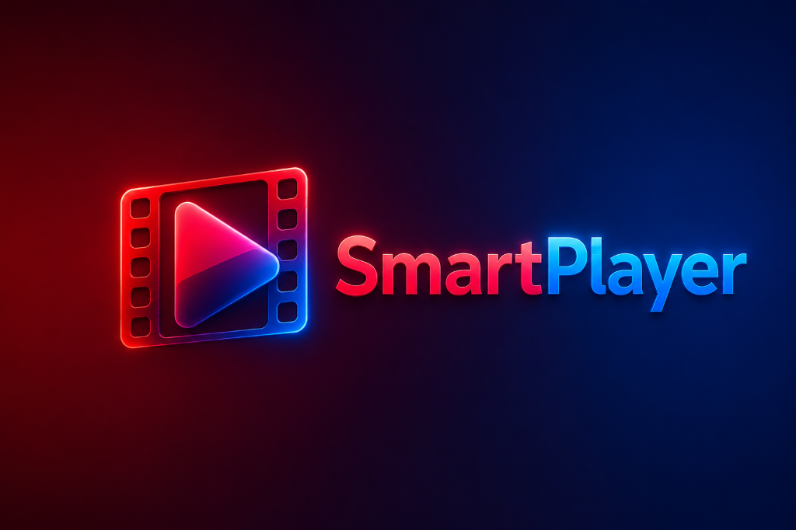

Open Source Desktop App
Your Media,
Reimagined.
A powerful JavaFX desktop player built with VLCJ. Featuring a modern glassmorphism UI, auto-hiding floating controls, and a cinematic viewing experience.

A powerful JavaFX desktop player built with VLCJ. Featuring a modern glassmorphism UI, auto-hiding floating controls, and a cinematic viewing experience.
Gorgeous glassmorphism overlays and dynamic gradients that make your videos pop.
Built on the rock-solid VLC engine via VLCJ. If VLC can play it, SmartPlayer can play it.
Full keyboard shortcut support for seeking, volume, subtitles, and playback controls.